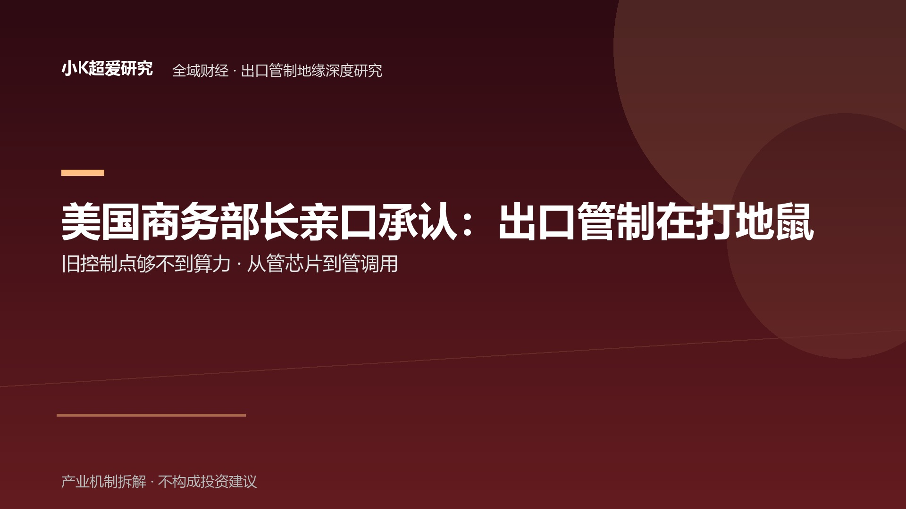

美国商务部长亲口承认：出口管制在“打地鼠”——因为旧的控制点，够不到算力了
打地鼠自白 × 从管芯片到管调用：当海关够不到远程调用，管制控制点从边境迁到机房
全域财经 · 美国出口管制 × 东南亚承接国博弈 深度研究（管制外溢篇） 2026-09-03 ｜ 本文所称"草案"为 BIS 征求意见稿（8/28 泄露、9 月征求行业意见），尚未正式生效 主轴：三层权力结构（美国规则制造 × 英伟达承受兼前置合规 × 马来规则对冲）× 时间链（2025 拆墙→18 个月空窗→8/28 草案→9/3 自白）× 结构（限制对象从物理货物到远程算力）｜参照：8/28 The Information 草案独家 × 9/3 Lutnick Chapel Hill 记者会 × MIDA 1H2026 投资数据 × 英伟达 8/26 财报｜验证：9 月征求意见稿条款 × RASA 立法进度 × 马来数据中心实际豁免范围
全文采用【事实】【机制】【推论】【待验证】【证伪】五级标记。事实仅使用可回溯公开来源（记者会记录/主流财经媒体/MIDA 官方数据/公司财报），第三方口径一律标注；涉及调查与指控的案件只写"调查中"，不写既成事实；不评论政策动机，只写已发生的动作序列与可检验的机制。
导语：管制者自己承认在打地鼠——这篇研究的主角不是"被管的芯片"，是三个不同位置的人
2026 年 9 月 3 日，北卡罗来纳州 Chapel Hill，G20 创新部长会后的联合记者会上，美国商务部长 Howard Lutnick 说了三句话：
第一句：美国向中国提出过出售 H200 及同类芯片的条件，"中国没接"——所以"我不认为有必要放松管制"。
第二句："我们在出口管制里玩打地鼠（whack-a-mole）。"
第三句："AI 的工具会让（管制执法）越来越好、越来越好。"——解法是用 AI 去审查数据中心用户。
【事实：Lutnick 2026-09-03 Chapel Hill 记者会，IANS/Prokerala 等多家转述】
同一天，这场记者会的背景板上，是四天前（8/28）The Information 独家披露的一份 BIS 新草案：美国正在起草规则，对象不再是"芯片运到了哪里"，而是中国企业经泰国、新加坡、马来西亚的数据中心"远程访问"英伟达 GPU——草案最早 9 月征求行业意见。也就是今天中文财经圈说的"草案浮出"。
【事实：The Information 2026-08-28 独家报道，多家跟进；草案 9 月征求行业意见】
把这两件事叠在一起，真正值得研究的问题不是"美国又加码了"——那只是把新闻复述了一遍。真正的问题是一个结构：
Lutnick 承认的不是"美国管不住了"，而是更精确的一件：美国发现旧的控制点——海关、物流、芯片本身——不够用了。算力不再跟着货物走，管制就必须迁移到新控制点：数据中心、运营资质、用户身份。这份草案，就是这场迁移从"管芯片卖给谁"，走向"管谁能在世界任何一个角落调用芯片"的第一步。
而在这条新轨道上，站着三个位置完全不同的人：
- Lutnick——规则制造者。他的"打地鼠"三个字，等于官方承认：物理海关这套旧控制点，已经够不到数字流动。
- 黄仁勋——规则承受者，正在成为美国出口管制体系的前置合规节点。他两天前刚在财报会上说"一半市场在 neocloud"，两天后草案就要掐断它。
- 东姑扎夫鲁——规则承受者之外的"对冲者"。马来西亚一边收着美国第一大外资、中国第四大外资，一边宣布"有条件中立"。
Lutnick 在打地鼠，扎夫鲁在走钢丝。一个是画线的人，一个是接线的人，中间还夹着一个既想卖芯片、又不得不帮美国守门的英伟达。
本篇研究回答三个问题：旧的控制点为什么必然不够用？从"管芯片"到"管调用"，这层转换把英伟达放进了什么位置？以及——马来西亚的"两头下注"，为什么在草案面前选择空间正在收窄？
一、先讲清楚机制：为什么"打地鼠"是必然，不是失误
1.1 旧管制的边界，长在物理世界
【机制】
美国出口管制（EAR）的底层逻辑是管物理货物：芯片从 A 运到 B，海关看见箱子，许可证卡在物流环节。这个体系从冷战管到 2022 年，边界清晰——管住"芯片到了谁手里"，就管住了算力给了谁。
但 AI 算力的使用方式在过去三年发生了物理性变化：芯片不用运进中国，也能被中国用。
中国公司不用买卡、不用运卡，只要在泰国、马来西亚、新加坡的数据中心里租一排 GPU，远程登录、远程训练，模型就在境外算完了——芯片从头到尾没有越过任何一条海关边界。
【机制：远程算力租赁模式——租户与算力物理分离，管制链条在"物流"环节断掉】
1.2 这个洞，是美国自己留的：18 个月执法空窗
【时间链：管制的"拆墙→放任→被点名→补洞"四站】
| 节点 | 动作 | 性质 |
|---|---|---|
| 2025 年 | 特朗普政府选择不执行拜登末期的云服务商 KYC 规则（Foundry Due Diligence Rule），并撤销 AI 扩散规则 | 拆墙 |
| 2025-2026 约 18 个月 | 100+ 中国实体未被列入实体清单，被 CSIS 称为"十年未有之执法空窗"（TechTimes） | 放任 |
| 2026-07-22 | 白宫 OSTP 主任 Kratsios 点名：Kimi K3（2.8 万亿参数）疑经泰国数据中心用 GB300 训练（指控/调查语境，英伟达未回应） | 被打脸 |
| 2026-08-28 | BIS 草案泄露：堵"远程访问"漏洞，点名泰国/新加坡/马来数据中心 | 补洞 |
| 2026-09-03 | Lutnick 记者会亲口承认"打地鼠"，并给出解法"用 AI 管 AI" | 自白 |
【事实：各节点出处——KYC 规则搁置与空窗（TechTimes 2026-08-29）；Kratsios 点名（2026-07-22，Bloomberg/路透等）；草案（The Information 2026-08-28）；记者会（IANS/Prokerala 2026-09-03）】
1.3 打地鼠的数学：洞的产生速度 > 补洞的速度
【机制】
为什么 Lutnick 用"打地鼠"这个词，而不是"升级"或"收紧"？因为这个词描述的是一个永远在补、永远补不完的游戏：
- 管芯片运输出口 → 芯片在第三国组装、经第三国发货；
- 管第三国转口 → 算力租赁绕开物流，远程访问；
- 管远程访问 → 数据中心开在别国、用别国云厂商的账户；
- 管数据中心 → 数据中心的客户是谁？客户的上游是谁？穿透式审计……
每一个新规则落地，都需要 6-18 个月才能形成执法能力；而一个新的绕行方式，数据中心 18 个月就能让一个大模型完成"境外训练"。补洞的速度天然慢于挖洞的速度——因为规则要过立法、过行业评议、过司法审查，而绕行只需要改一行架构。
所以"打地鼠"不是 Lutnick 的修辞失误，是他对体系状态的准确描述：这个体系已经进入"永远在补上一个洞"的稳态。
【推论：管制有效性从"封堵"转为"减速"——管制的目标函数已经变了，从"不让用"变成"让用得更贵、更慢、更可追踪"】
二、第一层：美国——"打地鼠"自白的三个信息量
2.1 自白一：官方承认的不是"管不住了"，是旧控制点不够用了
【事实】
Lutnick 原话的关键不在"打地鼠"三个字好玩，而在于它出现的场合：这是美国商务部长——出口管制签发机关的长官——在台上亲口承认：现行管制体系的控制点正在失效。
在此之前，美国官方的叙事一直是"管制有效、漏洞在补"。而"打地鼠"这个词默认了一个前提：老鼠（绕行方）比猫（管制方）更快，猫只能追着洞跑。
这个自白的准确含义值得精确到字：它不是"美国管不住了"——那会被下一份更严的规则轻易反驳；而是"美国发现旧的控制点不够用了"。这两句差别很大：前者是宣判，后者是承认控制点选错了位置——而位置可以迁移。海关够不到远程调用，不代表机房也够不到。威慑的折损正来自这里：所有被管对象都听到了，旧的那套控制点，官方自己已经承认不够用了。
【推论：管制威慑的自我损耗——"打地鼠"自白使绕行方的预期收益上升（被抓住的概率被官方定性为低）】
2.2 自白二：解法是"用 AI 管 AI"——管制从海关逻辑，换到数字基础设施逻辑
【事实】
Lutnick 给的不是"加强海关执法"，而是"AI 的工具会让执法越来越好"——用 AI 审查美国数据中心的用户。
这句话的信息量比"打地鼠"更大。它意味着美国承认：物理海关作为控制点已经到头，下一阶段管制的抓手是"数据中心"本身——谁的数据中心、谁批准它运营、它的用户是谁、用户在干什么，全部数字化审查。
配套动作已经出现：草案的豁免条款写明，盟国可以买 AI 芯片，条件是由"美国批准的数据中心运营商"来运营（Manila Times 报道）。
【机制：从"海关清单"到"运营商白名单"——管制对象从"物"变成"运营资格"】
这不是贸易管制的修补，这是把问题从贸易领域推进到了数字基础设施治理：谁的云、谁的地、谁批准、谁审查——控制权从"边境"移到了"机房"。
【推论：下一阶段管制的核心资产不是海关数据，是"数据中心用户的可信身份数据"——谁掌握用户审查，谁就处在管制执行链的前置位置】
2.3 自白三：H200 橄榄枝——谈判口实先于规则
【事实】
Lutnick 在同场记者会上说：美国向中国提过卖 H200 及 AMD 同类芯片的条件，中国没接，所以"没必要放松"。
这句话的机制作用是给整份草案装了一个前置免责：不是美国不卖，是中国不买——管制的道德负担被转嫁到"对方拒绝"上。它和草案本身一起构成了完整的政策姿态：先给交易口，再收紧非交易部分。
【推论：该表态是谈判筹码逻辑的一部分，与草案的"豁免条款"共同构成"可交易性"设计——后续若中方表态变化，豁免范围可能同步调整。此为机制推论，非对其动机的断言】
三、第二层：英伟达——不是主角，但位置最拧巴
3.1 两天时间差：8/26 财报 vs 8/28 草案
【事实】
把三份公开记录放在一起看：
- 2026-08-26，英伟达 Q2 FY2027 财报会。黄仁勋说："多数人只盯着 hyperscaler，但一半的市场在 neocloud 和 sovereign AI。"AICE（AI 云+主权 AI+企业）收入 $47.2B，同比 +138%；公司给出下财年 +70% 的增长指引；两天后市值 $5.52T，全球第一。
- 2026-08-28，The Information 披露草案：打击对象恰恰是东南亚的算力租赁——neocloud 的核心生意。
- 2026-08~09，FT 报道：英伟达对亚洲客户启用白名单，削减一半以上原有客户，派员工现场检查客户数据中心——企业正在成为美国出口管制体系的前置合规节点。
【事实：财报（Seoul Economic Daily 2026-08-28 转述）；草案（The Information）；白名单（FT 2026-08）】
3.2 这个时间差说明了什么：限制的对象已经换了
【机制】
8/26 财报和 8/28 草案背靠背，真正值得注意的不是"英伟达股价跌了没"，而是两件事描述的是同一条增长曲线，却得出相反的结论：
- 财报说：neocloud 和 sovereign AI 是下一半市场，+138%，+70% 指引——增长在"别人建算力、别人租算力"里；
- 草案说：这些"别人"（东南亚数据中心）恰恰是漏洞——增长点在管制打击面上。
黄仁勋嘴里"一半的市场"，在 Lutnick 的草案里是"一半的漏洞"。英伟达的增长叙事，和美国的安全叙事，在东南亚数据中心这个点上正面相撞。
而这背后是管制对象的历史性切换：以前美国管的是"中国买了多少芯片"——这是物流问题；现在管的是"谁能在全球任何一个地方调用这些芯片"——这是使用权问题。
使用权问题没法用海关解决，只能用"谁运营、谁审查、谁批准"解决。于是英伟达被推上了守门员的位置。
【推论：英伟达的"白名单+现场检查"不是自愿的合规姿态，而是它避免"更硬监管"的护城河动作——主动守门，好过被强制开门检查。此为基于公开行为的推断】
3.3 英伟达的三重身份
【机制】
在这份草案里，英伟达同时是三种人：
- 最大受害者：neocloud/sovereign AI 是它自己点名的下一半市场，草案+白名单正在掐这条曲线；
- 最大游说者：它公开反对过 AI 扩散规则，说管制"把全球第二大市场拱手让人"；
- 正在成型的前置合规节点：白名单砍客户、派员工查机房、访谈终端用户——政府把海关做不到的穿透式审查，前置到了它的销售环节。
一个公司同时是"被管的""喊冤的"和"帮忙守门的"。这种拧巴不是英伟达独有的，而是所有在"美国安全"与"全球市场"之间做生意的美国算力公司的共同处境——只是英伟达体量最大，拧巴得最明显。
【推论：英伟达每多守一天门，它与中国市场的距离就远一天；但每少守一天门，它失去的可能是整个美国市场的信任票。守门是它的两难最优解】
四、第三层：马来西亚——"有条件中立"的选择空间，正在被草案收窄
4.1 承接国的底牌：44% 的投资，和两个最大资本来源
【事实】
2026-08-28，MIDA（马来西亚投资发展局）发布 1H2026 数据：
- 马来西亚上半年批准投资 RM218.5B（+11.7%）；
- 其中数据中心+云项目 RM95.8B，约占 44%；
- 外资来源排名：美国第一（RM33.1B）、新加坡第二（RM25.9B）、日本第三（RM22.3B）、中国第四（RM16.5B）。
【事实：MIDA 1H2026 投资数据，The Edge Malaysia 2026-08-28】
扎夫鲁——2025 年 12 月 3 日起任 MIDA 主席、同时是首相高级政治顾问——就是这份投资成绩单的守护人。他的履历本身就是"两头通吃"的注脚：英国求学、CIMB 集团 CEO、马来西亚前财长、前 MITI 部长，以及清华五道口金融学院 EMBA。
【事实：扎夫鲁任职（MIDA 官网任命公告 2025-12-03）；教育背景（公开履历）】
4.2 "有条件中立"：给两边各写一张保证书
【事实】
扎夫鲁在 SCMP《This Week in Asia》专访里提出了马来西亚的对冲框架，他的原话概括成一句是：
"外交政策上没人逼我们站队，但涉及技术安全时，他们要求我们站队。"
马来西亚的应对是"有条件中立"（conditional neutrality）：收紧敏感软硬件的许可审查、检查托管外国 AI 芯片的数据中心、向美国书面保证美方设备不转口中国——反过来也向中国保证不反华。
【事实：扎夫鲁 SCMP 专访，Blackwire Intel 转述】
【机制：对中小承接国来说，"有条件中立"=用合规证明换两头资本——向美国证明"我不是你的漏洞"，向中国证明"我不是你的敌人"，用两份保证书同时保住 RM33.1B 和 RM16.5B】
4.3 草案的豁免条款，正在收窄"对冲"的操作空间
【机制】
现在把草案的豁免条款和马来西亚的位置叠在一起看：
草案对盟国企业的豁免是限时无证出口——但有一个前置条件：由"美国批准的数据中心运营商"来运营。
这意味着：数据中心能不能接美国芯片、能接多少、由谁运营，审批权在华盛顿手里，不在吉隆坡手里。马来西亚可以做"有条件中立"的自我审查，但草案的逻辑是——你的数据中心要不要被美国芯片喂饱，决定权不在你。
【推论：豁免条款的本质不是"给盟国开后门"，是把东南亚数据中心的控制权收进美国公司的运营资质体系里——"批准运营商"条款=算力主权让渡的阀门。此为机制推论】
于是马来西亚的三明治结构，选择空间被收窄成三条岔路：
- 想保住美国芯片（数据中心 44% 投资盘的主体）→ 接受"美国批准的运营商"条款 → 机房控制权让渡；
- 想保住自主性 → 失去美国芯片供给 → 数据中心 44% 的投资盘子悬空；
- 中国资本（RM16.5B，第四大）在草案收紧后能否继续进场，同样取决于数据中心能否合规运营。
真正被收窄的不是"亲美还是亲中"的选边——扎夫鲁两头都还能做生意。被收窄的是更底层的一层：只要机房里跑的是美国芯片，数据中心就得接受美国定义的合规体系；而 44% 的投资盘，恰恰是美国芯片喂起来的。在基础设施层面收窄的选择空间，比在政治层面被逼选边更彻底。
【推论：扎夫鲁的钢丝，一边是"投资政绩"（44%）、一边是"主权让渡"（批准运营商条款），中间是英伟达的白名单和美国的现场检查。他每往前一步，都要重新算一遍两边的力。此为基于其公开言行的推断，非对其决策的断言】
4.4 悬空的不仅是投资，还有规划中的产能
【事实】
行业数据机构 DC Byte 的统计显示：马来西亚、印尼、泰国规划中的 100MW+ 级数据中心共 31 座，而目前建成的只有 2 座（该数字为中文媒体转引口径，英文原始口径待核）。
【待验证：DC Byte"31 座 vs 2 座"为转引数据，写稿时未能回查英文原始报告】
规划中的算力产能，和草案收紧后"可服务的客户结构"，错位在扩大——芯片可以不进中国，但数据中心能不能租出去，取决于租户干不干净。租约没变，变的是"谁的租约能通过用户审查"。
【推论：数据中心从"数字地产"重估为"合规资产"——KYC 能力成为新的估值变量（此为机制推论，供后续验证）】
五、抬升：三个人的游戏，其实是一条完整的利益链
把三章放在一起，这篇研究真正想给的结构是一张图：
美国画线 → 英伟达守门 → 马来西亚承压 → 中国寻找算力
- 美国（Lutnick）：画线的人。但他画的已经不是"芯片不卖给你"，而是"算力可以在哪、由谁运营、用户是谁"——线画在了数字基础设施上。
- 英伟达（黄仁勋）：守门的人。既想卖芯片（neocloud 是下一半市场），又不得不帮美国查用户（白名单、现场检查）。它每守一次门，都是在用今天的市场换明天的信任票。
- 马来西亚（扎夫鲁）：承压的人。"有条件中立"想两头下注，草案的"批准运营商"条款逼它交出机房控制权——钢丝上的选择空间正在收窄。
- 中国：被画线的一方，也是这场游戏的"外部变量"。H200 橄榄枝没接、Kimi K3 被点名、远程算力被堵——它在这个链条里的动作，决定了下一轮草案的松紧。
这条链最漂亮的地方在于：它不再是"美国 vs 中国"的二人转。 中间多出了两个必须自己算账的玩家——一个既被管又帮忙管的公司，一个想对冲却在被收窄空间里重新找位置的国家。管制研究从此多了一个维度：不只问"谁被禁了"，要问"谁在帮禁、谁在被禁的夹缝里重新找位置"。
六、反方：两种情景，各自需要什么条件成立
情景 A（草案落地慢、执行软——"打地鼠"继续）：管制减速，绕行继续
- 前提：RASA 法案（把远程访问写进法律）继续卡在参议院；9 月征求意见稿条款被行业游说软化；第一张 injunction（法院禁令）如期而至——BIS 2009/2011/2014 年曾三度出具"云访问非出口事件"的咨询意见，法律上"远程访问算不算出口"本就未定。
- 结果：草案名义落地、实际执行靠白名单自律，东南亚数据中心在"合规焦虑"中继续运营，中国算力获取从"便宜绕行"变"贵且慢的绕行"。
- 这个情景下，本文的"打地鼠"判断成立，"换轨"判断部分成立（名义上换了，实际没换彻底）。
情景 B（RASA 快速通过 + 执法成型——真换轨）：算力主权成为硬通货
- 前提：RASA 在未来数月搭 NDAA 便车通过（Freshfields 评估认为存在该路径）；"批准运营商"条款落地并配套 AI 用户审查；东南亚数据中心普遍纳入白名单体系。
- 结果：管制从"减速"变"可定价"——合规本身成为生意：谁的数据中心通过了审查、谁的云厂商在美国白名单里，谁的算力就值钱。马来西亚的"有条件中立"正式让渡为"美国体系内的运营资质竞赛"。
- 这个情景下，本文的判断全部成立，且马来西亚的对冲空间会被收窄到接近"二选一"。
【机制说明：两情景的关键分歧点=立法速度（RASA 何时落地）与执法抓手（运营商白名单是否成为唯一通道）——这两个变量可跟踪，本文不预测哪边概率更高】
七、证伪条件：出现什么，本文就错了
- "打地鼠"被证伪：若 9 月征求意见稿显示 BIS 已具备远程访问的实际执法工具（如与云厂商的数据接口协议落地），"补洞速度赶不上挖洞速度"的机制判断需降级。
- "换轨"被证伪：若最终草案只是实体清单的微调、未包含"远程访问/数据中心用户"条款，"从管芯片到管调用"的命题不成立。
- "英伟达前置合规节点"被证伪：若 FT 报道的白名单削减幅度被证实大幅夸大（或已恢复大部分客户），"企业前置合规"判断需重估。
- "马来选择空间收窄"被证伪：若草案最终豁免范围扩大（马来西亚数据中心整体豁免，无需"美国批准运营商"），或中国资本在马来快速退潮，"对冲空间收窄"的前提失效。
- "算力主权让渡"被证伪：若马来西亚通过本地立法反向约束外资数据中心（如强制本地合资、数据本地化），"让渡"判断需修正为"对等谈判"。
- "31 座规划产能"数据若与英文原始口径出入大，"悬空"叙事强度需下调（该点已标【待验证】）。
八、价值捕获：这场换轨，谁在重新定价什么
用本文的"议价空间"框架粗看（公式示意，非完整 TCO 模型）：
议价空间 ≈ 技术壁垒 × 切换成本 × 供应集中度 × 依赖度
8.1 美国：用"批准权"制造新的稀缺
芯片本身在降价（供给放量），但"合规运营权"在变稀缺——能通过美国用户审查的数据中心、能进白名单的云厂商，成为新的稀缺资源。管制从"减少供给"转向"制造资格壁垒"，美国在算力链上的议价工具从"货"变成了"章"（批准章）。
8.2 英伟达：用今天的守门，买明天的信任
英伟达的议价能力不来自"多卖卡"，来自"唯一能同时满足中美两边最低要求的供应商"——但每守一次门，它的中国市场就更远一分。它的价值捕获公式里，新增了一项合规成本税：白名单审查、现场检查、用户访谈，全部变成它自己的运营成本。净效应：短期护住美国市场信任，长期收窄全球市场空间。
8.3 马来西亚：从"赚地租"到"买资质"
数据中心 44% 的投资占比是地租逻辑（土地、电力、位置）；草案之后，这笔地租的兑现前提是"合规资质"——而资质在华盛顿手里。马来西亚真正稀缺的不是地，是被批准运营的资格。 它的议价空间取决于：美国芯片供给的不可替代性（高）vs 它自己能提供的替代方案（电力、位置可替代性中等）——两头都被捏着。
8.4 中国：算力的获取成本，从"物流成本"变成"合规成本"
以前绕行靠物流（转运、第三国组装），成本可控；现在绕行要过"用户审查"，成本结构变了——更贵、更慢、更可追踪。中国在全球算力链上的位置没变（被排除方），但被排除的方式变了：从"买不到"变成"租不到干净的"。
结语：打地鼠的人，和走钢丝的人
Lutnick 在打地鼠——他承认的不是管不住，而是旧控制点不够用了，解法是给数据中心装上"美国批准"的闸门。扎夫鲁在走钢丝——他手里是美国第一大外资、中国第四大外资，和一份正在收窄他对冲空间的草案。
中间是英伟达：既想卖芯片，又不得不帮美国守门。
这份草案最值得记住的，不是它禁了什么，而是它第一次把管制对象从"芯片"换成"调用芯片的人"——管制边界从货物，迁移到了算力。物理世界的边界是海关，数字世界的边界是机房；海关管箱子，机房管用户。
而在机房这个新战场上，打地鼠的人不会停下，走钢丝的人也不会掉下来——他们只会各自把游戏玩得更精细。真正要盯的，是 9 月征求意见稿的条款、RASA 的立法进度，和马来西亚那 31 座规划中的数据中心的租约——规则没落地，游戏就没结束。
数据口径与来源
- Lutnick 记者会三句话：IANS/Prokerala 2026-09-03 转述（Chapel Hill，G20 创新部长会联合记者会）
- BIS 草案与豁免条款：The Information 2026-08-28 独家；Manila Times（豁免条款"美国批准的数据中心运营商"）
- 执法空窗与 KYC 搁置：TechTimes 2026-08-29（引 CSIS）
- Kratsios 点名 Kimi K3：2026-07-22，Bloomberg/路透/钜亨等（指控/调查语境）
- 英伟达财报：2026-08-26 Q2 FY2027 电话会，Seoul Economic Daily 2026-08-28 转述；市值 $5.52T 为 2026-08-27 收盘
- 白名单削减与现场检查：FT 2026-08
- MIDA 1H2026 投资数据：The Edge Malaysia 2026-08-28
- 扎夫鲁"有条件中立"：SCMP《This Week in Asia》专访，Blackwire Intel 转述；任职：MIDA 官网任命公告 2025-12-03
- BIS 2009/2011/2014 云访问咨询意见与 RASA 立法进度：TechTimes/Baker McKenzie/Freshfields
- DC Byte 数据中心规划：中文媒体转引，【待验证】
本文为产业机制研究，不构成任何投资建议。涉及调查与指控的案件均以"调查中/指控"表述，未作既成事实断言。